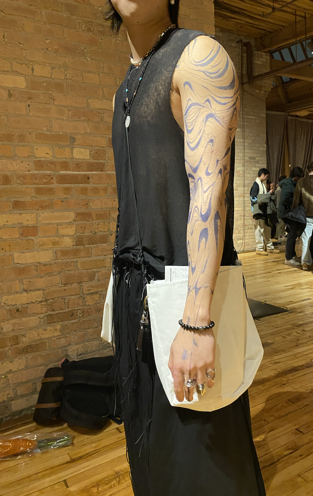
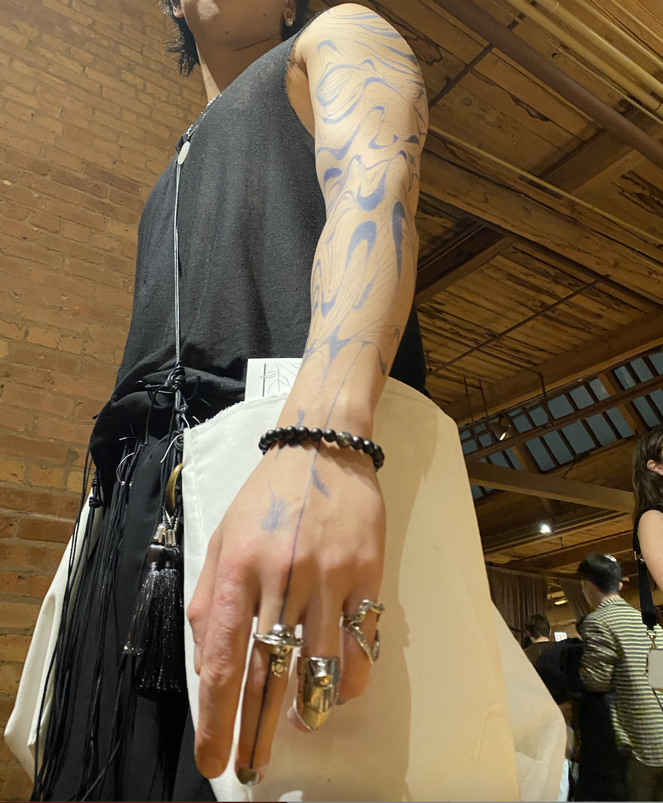
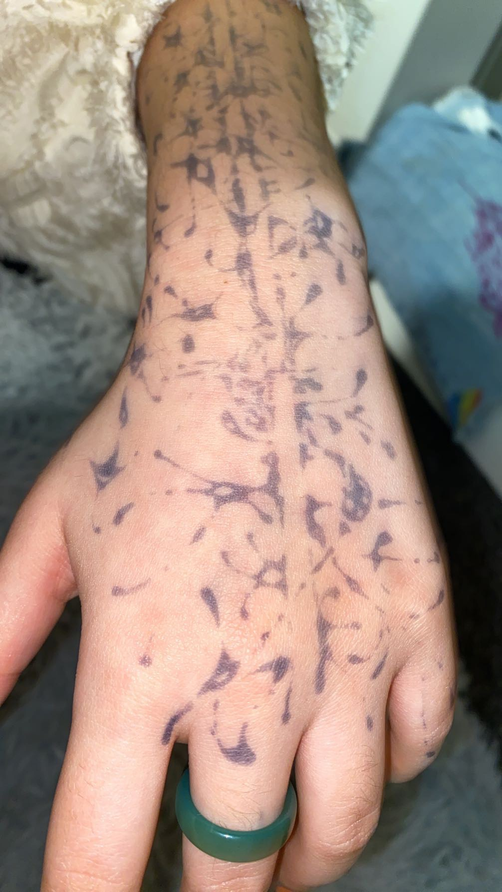
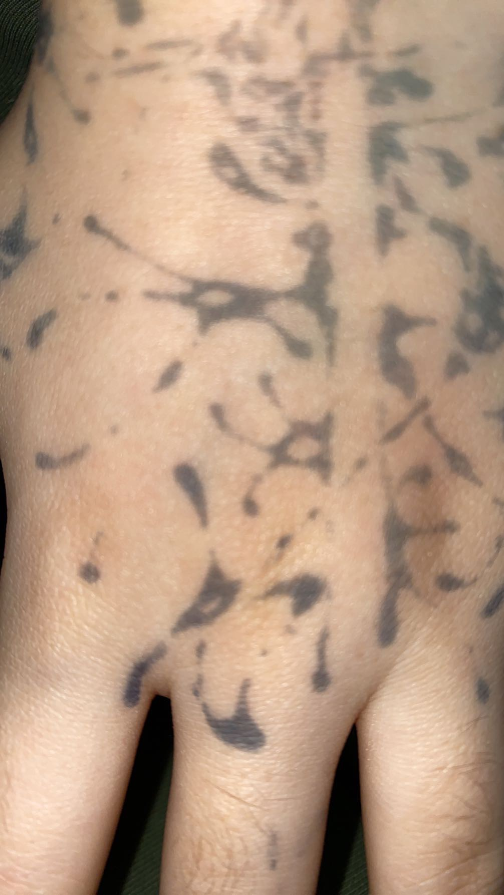
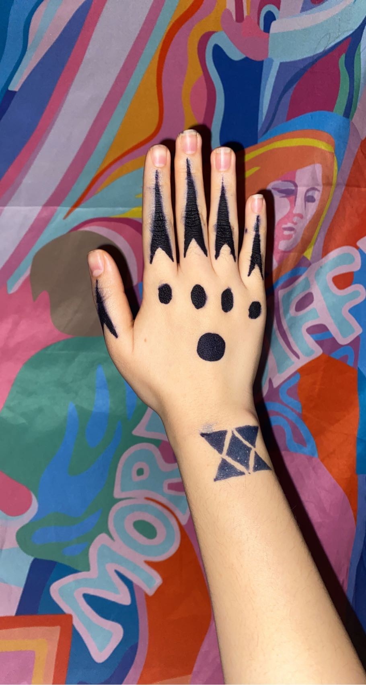
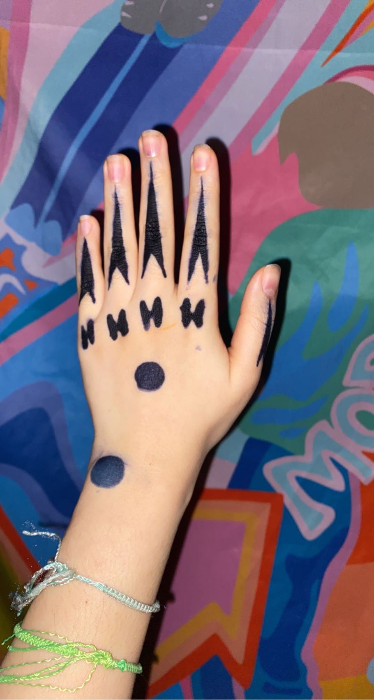
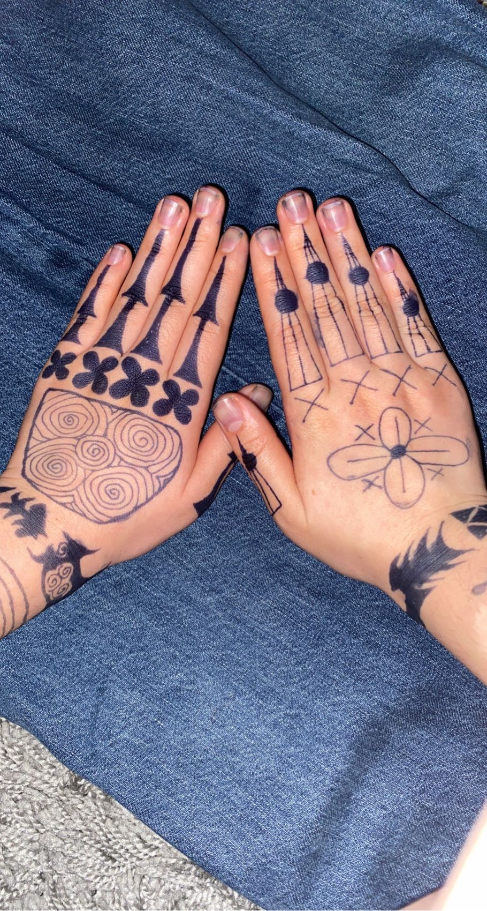

I have experimented with using jagua ink for various designs, from fashionable ones to cultural ones. Although this is still a new medium for me, I am pleased and excited with the potential for this outlet of creativity on a three dimensional canvas!
Here are some designs that I have done.






Hajichi (tattoos for women from Ryukyu Kingdom) 
Hajichi (tattoos for women from Ryukyu Kingdom) 
Hajichi (tattoos for women from Ryukyu Kingdom)